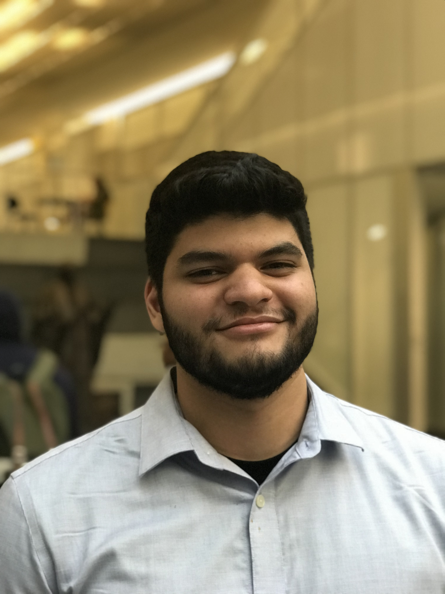

Education and Skills
John Jay College (CUNY)
Bachelor of Science, Computer Science and Information Security, expected May 2019.
GPA: 3.8, Dean's List 2015 to 2019.
National Science Foundation STEM Scholarship Recipient 2018 to 2019.
Honors Program – Participated in leadership development program and academic advising.
PRISM Program – Participated in research development program and one-to-one faculty mentoring. Faculty Mentor: Dr. Sven Dietrich.
Notable Courses – Capstone Experience in Cybersecurity (CSCI 400) Grade: A | Computer Security (CSCI 411) Grade: A | Network Security (CSCI 412) Grade: A | Cryptography (CSCI 360) Grade: A
Languages: English and Spanish.
Operating Systems: Windows, Mac, and Debian & RedHat based Linux distributions - including Kali, CentOS, and more.
Programming Languages: Object-Oriented C++, Python, Shell Scripting, HTML, CSS, and Javascript.
Familiar with: Steganography, reverse engineering tools, password cracking, binary analysis, cryptanalysis, intrusion detection systems (Snort, Bro, OSSEC), Wireshark, and Nmap.
Research Experience
Capstone Experience in Honors Program (HON 401), New York, NY, Spring 2019
Student Researcher, John Jay College (CUNY), Faculty Mentor: Dr. Sven Dietrich.
Project Title: A Combined Approach to Vulnerable Code Clone Discovery.
- Developed a new method of vulnerability discovery utilizing both source and binary code.
- Performed a survey of existing state-of-the-art source code clone discovery techniques.
- Evaluated source code clones across four open source projects and large database of firmware images.
- Presented research at campus-wide symposium (May 2019).
- View the Poster.
Program for Research Initiatives in Science and Mathematics (PRISM), New York, NY, Summer 2018
Student Researcher, John Jay College (CUNY), Faculty Mentor: Dr. Sven Dietrich.
Project Title: Towards Vulnerable Binary Code Clone Detection through Firmware Lineage.
- Developed an advanced method of vulnerability discovery in binary code.
- Evaluated firmware images across multiple architectures and compilers.
- Experimented with several binary disassemblers.
- Presented research at campus-wide symposium (May 2019).
- View the Poster.
Capstone Experience in Cybersecurity (CSCI 400), New York, NY, Fall 2018
Student Researcher, John Jay College (CUNY), Faculty Advisor: Dr. Sven Dietrich.
Project Title: An Empirical Study of the Robustness of Google Play Store Applications Through Fuzzing Techniques.
- Performed an empirical study of robustness in top 100 Google Play Store applications.
- Studied various fuzz testing applications and relevant mobile fuzz techniques.
- Evaluated fuzz testing results and software bugs on multiple emulators and physical devices.
- Coordinated a team of four students to meet deadlines and pursue goals of the study.
- View the Poster. | View the Paper.
Summer Research Opportunities Program (SROP), East Lansing, MI, Summer 2018
Research Intern, Michigan State University, Faculty Mentor: Dr. Guan-Hua Tu.
Project Title: The Design and Implementation of a Low-Cost Bitcoin Vending Machine.
- Engaged in 10 week residential program for students interested in graduate study.
- Developed a proof-of-concept, low-cost vending machine and server to carry out fast Bitcoin transactions.
- Utilized microcontroller within vending machine to communicate with server and verify transactions.
- Presented research at campus-wide symposium (July 2018).
- Awarded SROP 2018 Most Interesting Research Project.
- View the Poster | View the Abstract | View the Mid-SURE Program Book
Teaching Experience
Bridge to Enter Advanced Mathematics (BEAM), New York, NY, Summer 2019
Counselor and Teaching Assistant, Will begin July 2nd through August 13th 2019.
- Introduce groups of marginalized six and seventh grade students to mathematics above middle school requirements.
- Supervise students in the classroom and outside during social and educational activities.
- Work one-to-one and as a teaching assistant with students to introduce and improve their math skills.
Cybersecurity Workforce Alliance, New York, NY, Spring 2018
Teaching Assistant, John Jay College (CUNY).
- Worked with students on individual and small group basis to reinforce cybersecurity concepts.
- Motivated students to achieve personal and professional goals, complete assignments and improve performance.
- Facilitated discussion and addressed student grievances.
Code Advantage, New York, NY, Fall 2017 - Spring 2018
Lead Instructor.
- Educated children ages six to eleven through computer science and robotics classes.
- Taught curriculum at four NYC public schools in six classes.
- Engaged a class of fifteen to twenty students with weekly projects.
Leadership and Work Experience
Computer Science Society, New York, NY, Fall 2015 - Spring 2019
President (Fall '18 - Spring '19), Vice President (Fall ‘17 - ‘18), Member (Fall ‘15 - Spring '19), John Jay College (CUNY).
- Led student organization in professional, academic, and skill development events.
- Engaged with students of various backgrounds, and internal and external organizations on event planning.
- Motivated club officers and members to stay on track and go beyond their roles.
- Created and facilitated monthly agenda of events, meetings, student-led workshops, competitions, conference attendance, and technology-focused office tours.
- Awarded 'Student President of the Year' for Fall 2018/Spring 2019 term.
Sometimes we talk and pitch the club to incoming freshmen and prospective members!
John Jay College Honors Program, New York, NY, Fall 2017 - Spring 2018
Peer Mentor.
- Guided ten incoming honors students in experiencing a successful and fruitful first year of college.
- Led the ten students in year-long community service project related to human trafficking.
- Served as a professional, personal, and academic role model.
Cybersecurity Workforce Alliance (CWA), New York, NY, Spring 2017
Cyber Threat Analyst Intern, John Jay College (CUNY).
- Selected for a team mentored by key professionals to develop an insider threat program for the financial sector.
- Led the 6-student team to meet deadlines and exceed expectations for projects every week.
- Designed and communicated policies complying with regulatory cybersecurity requirements leveraging NIST CSF.
- Co-presented cybersecurity strategies about cybersecurity at the Federal Reserve Bank of New York.
Find some of the work we did here and here.
Extracurricular Activity
Blog post on CSForAll as part of National Hispanic Heritage Month, Fall 2018. Alt Link.
Participant at Kaspersky Industrial CTF Competition, Fall 2018
- Led team of four from John Jay College to complete challenges related to computer and network security.
Participant at PicoCTF Competition, Fall 2018
- Led team from John Jay College to gain computer & network security skills from this high school competition.
Participant at CSAW Capture The Flag Competition, Fall 2018
- Led team of four students from John Jay College to rank 130 out of 350 undergraduate teams at qualifying round.
Member of John Jay Women in Technology at John Jay College, Fall 2017 - Spring 2019
- Attends club meetings, events, and workshops, providing input on possible improvements to club experience.
Junior Representative at John Jay Honors Student Council, Fall 2017
- Created and hosted community building events for the John Jay Honors Program.
Major League Hacking’s Local Hack Day at John Jay College, Fall 2017
- Hosted virtual hackathon for four teams of four participants from multiple CUNY colleges.
Fundraiser for RestoreNYC Campaign, Spring 2017
- Raised more than $2,500 for mothers of sex trafficking through social media, email outreach, and bake sales.
CUNY SmartPitch Competition at CUNY Startups, Spring 2017
- Won third place out of 16 teams, developing a smartphone app to recommend restaurants based on specific menu items.
- Presentation and Victory!
DuckDuckGo NYC Hackathon, Summer 2016
- Collaborated with three developers to identify search engine improvements to DuckDuckGo’s API.
Updated on 5/23/2019